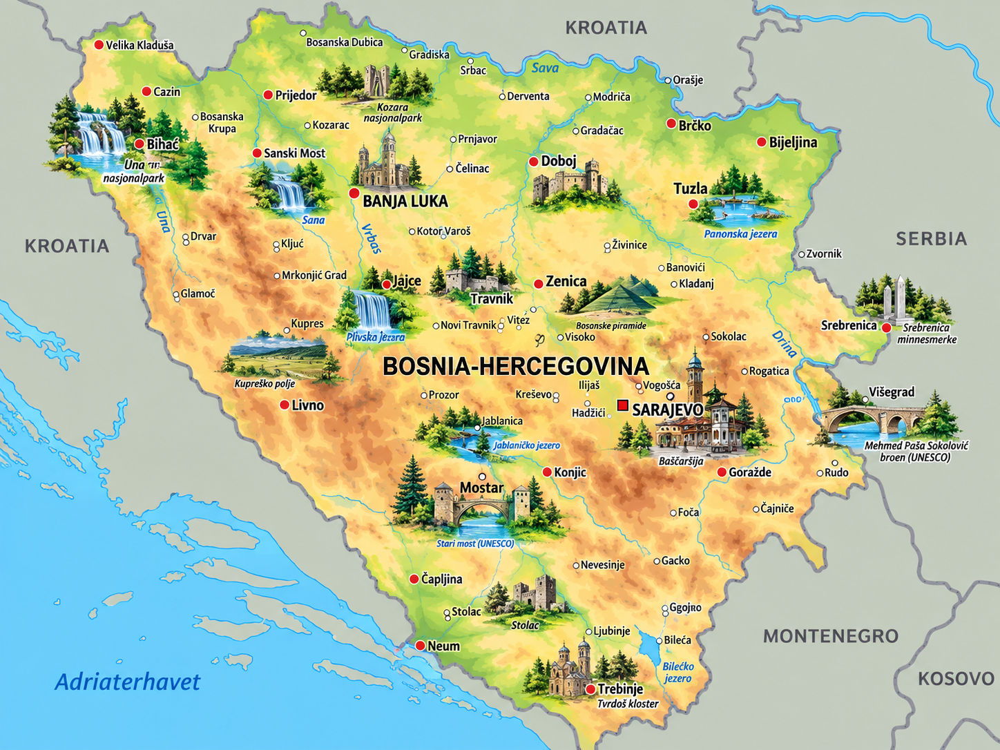
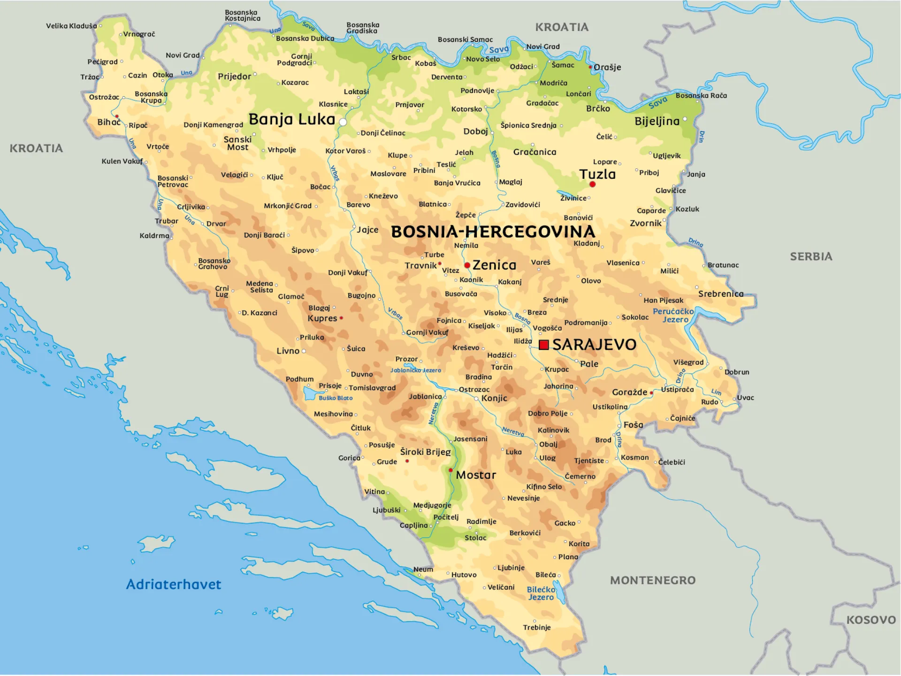

⚡ Korte fakta om Bosnia-Hercegovina
🗺️ Kart over Bosnia-Hercegovina
Klikk på et av kartene for å åpne og zoome i fullskjerm!


1. Natur og klima
Bosnia-Hercegovina er et utrolig fjellrikt land med krystallklare elver, dype daler og vakre fosser. Landet ligger på Balkanhalvøya i Sørøst-Europa.
Maglić er det høyeste fjellet på grensen til Montenegro, med sine 2 386 meter over havet!
Elvene Neretva, Una og Drina er berømte for sitt turkise vann og spektakulære fosser.
Landet har en veldig kort kystlinje ved Adriaterhavet – byen Neum gir landet ca. 20 km kyst!
Høyeste fjell
- Laster...
Lengste elver
- Laster...
Største innsjøer
- Laster...
Dyreliv: I de dype skogene og fjellene lever brunbjørn, ulv, gaupe, gemse og kongeørn. Sutjeska nasjonalpark har til og med en av Europas siste urskoger (Perućica)!
2. Folk og samfunn
I Bosnia-Hercegovina bor det ca. 3,2 millioner mennesker. Landet er kjent for sin varme gjestfrihet, deilige mat og en spennende blanding av kultur fra øst og vest!
🏢 Største byer i landet
- 🔹 Sarajevo: Hovedstaden, omringet av fjell, rik på historie og kultur.
- 🔹 Banja Luka: Landets nest største by, kjent for sine grønne parkområder.
- 🔹 Mostar: Verdensberømt for sin ikoniske gamle bro (Stari Most) over elven Neretva.
- 🔹 Andre viktige byer: Tuzla og Zenica.
☕ Kaffekultur & Gjestfrihet
Å sitte på kafé og drikke tradisjonell bosnisk kaffe (serveres i kobberkanner kalt džezva) er en viktig del av hverdagen.
Folk tar seg god tid til å prate sammen, og besøkende blir nesten alltid tatt imot med åpne armer og god mat!
🗣️ Mange folkegrupper og språk
Det bor tre hovedgrupper her: bosniakker, serbere og kroater. De tre offisielle språkene (bosnisk, serbisk og kroatisk) er så like at alle forstår hverandre uten problemer!
3. Stat og politikk
Bosnia-Hercegovina har et spennende og litt uvanlig politisk system med tre presidenter som deler på å styre!

Presidentskapet
Består av tre personer (én bosniakisk, én kroatisk og én serbisk representant) som bytter på å være leder.
Ministerrådet
Regjeringen ledes av en leder for Ministerrådet (tilsvarer statsminister).
Parlamentet
Lover og regler vedtas i parlamentet i Sarajevo.
📍 Landet er delt inn i to hoveddeler (enheter): Føderasjonen Bosnia-Hercegovina og Republika Srpska, pluss det nøytrale distriktet Brčko.
4. Bosnia-Hercegovinas historie
👑 Middelalderkongedømmet (1300-tallet)
Bosnia var et mektig uavhengig kongedømme under Kong Tvrtko I, som utvidet riket og skapte stor fremgang.
🕌 Det osmanske riket (1463–1878)
Tyrkerne styrte i over 400 år. De bygde fantastiske broer, moskeer og basarer som Baščaršija i Sarajevo.
🏰 Østerrike-Ungarn & Skuddet i Sarajevo (1914)
Erkehertug Franz Ferdinand ble skutt i Sarajevo i 1914 – en hendelse som utløste første verdenskrig.
❄️ Vinter-OL i Sarajevo (1984)
Sarajevo arrangerte de olympiske vinterlekene i 1984, der hele verden feiret idrett og vennskap i fjellene!
🕊️ Uavhengighet og ny tid (1992–I dag)
Landet ble uavhengig fra Jugoslavia i 1992. Etter noen krevende krigsår på 90-tallet har landet bygget seg opp igjen til å bli et fredelig og populært reisemål.
5. Økonomi og næringsliv
Hva lever de av i Bosnia-Hercegovina? Landet har rik tilgang på ren vannkraft, metaller, skogbruk og en voksende turisme!
Turisme
Mange turister besøker Mostar, Sarajevo og de flotte skianleggene.
Vannkraft
De mange elvene brukes til å produsere ren elektrisk strøm.
Tre og møbler
Eksporterer mye kvalitetstreverk og håndlagde møbler.
Metall & Gruver
Har lange tradisjoner med utvinning av jern, aluminium og stål.
6. Kultur, mat og underholdning
🍢 Deilig mat & sport
Nasjonalretten kalles Ćevapi (små grilte kjøttruller i et mjukt brød kalt somun, serveres med løk og kajmak). De er også berømte for bakverket Burek!
⚽ Populære sporter:
Fotball, basketball, håndball og ekstremsport som rafting i elvene!
🌟 Kjente personer
- 📚 Ivo Andrić: Vant Nobelprisen i litteratur i 1961 for sin berømte bok om broen over Drina.
- ⚽ Edin Džeko: En av verdens mest kjente fotballspillere og kaptein for landslaget.
- 🏀 Jusuf Nurkić: Stjerne i den amerikanske basketballigaen NBA.
- 🎬 Danis Tanović: Oscar-vinnende filmregissør.
🧠 Test deg selv: Bosnia-Hercegovina Quiz!
Spørsmål laster...